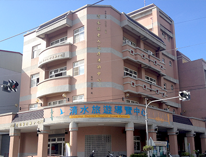

高美濕地
清水高美舊稱「高密」，是竹竿（篙）被吞沒的意思，可見昔日這一帶水域深不可測，與今日差異甚大。高美溼地在日治時期曾是「高美海水浴場」，是相當受歡迎的觀光勝地。
在高美溼地，可以觀察到超過130種的鳥類、有趣的底棲生物以及豐富的濱海植物，在中研院動物研究所、東海大學生物系、牛罵頭文化協進會等推動下，2004年9月，當時的臺中縣政府正式公告劃設「高美野生動物保護區」。每年春秋當候鳥蒞臨，是高美溼地進行生態觀察的最佳時節；而國寶級的雲林莞草，不僅擔負最重要的生產者，也造就了高美溼地不同季節的景觀變幻。
木棧道鋪設了之後，高美溼地成為旅客觀看夕陽、風車與溼地海域美景最佳之處。濕地旁還有全臺灣唯一紅白相間、八角形的「高美燈塔」，是清水人心中永遠的地標；而祀奉王爺的「文興宮」，創設至今已有二百多年的歷史，是當地最重要的信仰中心。
清水鬼洞
清水「鬼洞」是日治時代的軍事戰備地道，興建於1943年，二次世界大戰太平洋戰爭末期
當盟軍飛機日夜轟炸台灣時重要的軍事及物資儲備設施，日軍為長期抗戰預作準備，可說是清水人昔日的共同記憶，曾經做為國軍戰備重地。
閒置荒廢多時，目前已完成坑道整理，假日開放民眾參觀探索，坑道四通八達、冬暖夏涼，坑內設備有寢室、儲藏室、崗哨、廚房等軍事設施。
紫雲巖
紫雲巖主祀觀世音菩薩，在地人習慣稱為「觀音亭」
創建於清康熙元年（1662）；另一說為清乾隆15年（1750）。民國六十九年重建完成，其樣式由平房式殿閣，擴建為五層樓台之華麗殿閣，建築極為宏觀。
紫雲巖對文化、社教活動的推動不遺餘力，民國八十三年興建完成文化大樓，外觀具有中國傳統風與宗教氣息，設有閱覽室、廟史館、藝文活動中心、圖書館、大禮堂及香客房等設施，是一處結合社教、文化及觀光等多元化功能的佛教聖地。
鰲峰山觀景平台

介於米粉寮溪支流與橋頭寮溪間的一個山頭，其狀如臥虎之頭
坡道從清水街區而上，至海拔65公尺起出現急坡，長約100餘公尺間，海拔上升至100公尺。
昔日為橋頭寮(今吳厝里)人，往來山頂及市區買賣或辦事必經的古道，站在極頂的平台，是鳥瞰美麗清水海岸平原最佳的場景。
清水旅遊導覽中心
-

清水旅遊導覽中心，提供旅遊諮詢服務，開放時間為每周二到周日09:00-16:00 (星期一不開放)